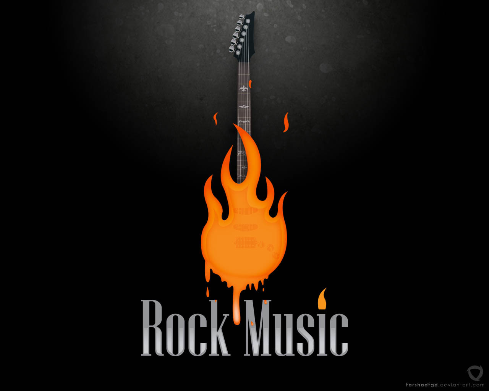
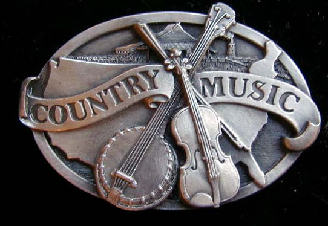

Rock

Rock music is a genre of popular music that originated as "rock and roll" in 1950s America and developed into a range of different styles in the 1960s and later, particularly in the United Kingdom and the United States.It has its roots in 1940s' and 1950s' rock and roll, itself heavily influenced by rhythm and blues and country music. Rock music also drew strongly on a number of other genres such as blues and folk, and incorporated influences from jazz, classical and other musical sources.
Pop
Pop music (a term that originally derives from an abbreviation of "popular") is a genre of popular music which originated in its modern form in the 1950s, deriving from rock and roll. The terms popular music and pop music are often used interchangeably, even though the former is a description of music which is popular (and can include any style), whilst the latter is a specific genre containing qualities of mass appeal.
Country

Country music is a genre of American popular music that began in the rural regions of the Southern United States in the 1920s. It takes its roots from southeastern American folk music and Western music. Blues modes have been used extensively throughout its recorded history. Country music often consists of ballads and dance tunes with generally simple forms and harmonies accompanied by mostly string instruments such as banjos, electric and acoustic guitars, fiddles, and harmonicas.
Hip Hop
Hip hop music, also called hip-hop, rap musicor hip-hop music,is a music genre consisting of a stylized rhythmic music that commonly accompanies rapping, a rhythmic and rhyming speech that is chanted.It developed as part of hip hop culture, a subculture defined by four key stylistic elements.Hip hop is simultaneously a new and old phenomenon; the importance of sampling to the art form means that much of the culture has revolved around the idea of updating classic recordings, attitudes, and experiences for modern audiences - called "flipping" within the culture.